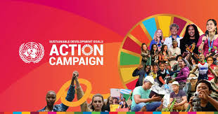
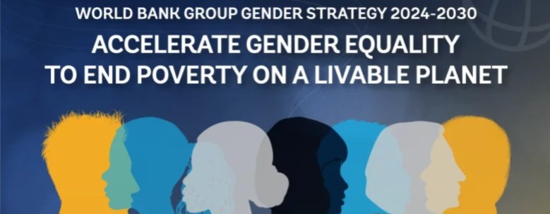
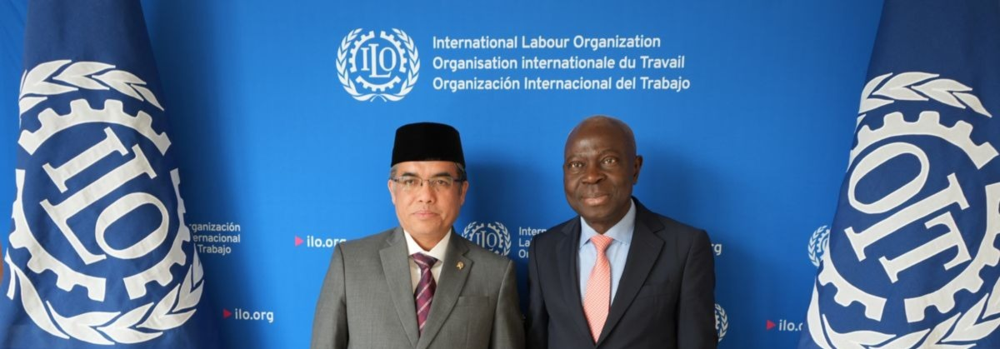

📋 Pengertian Kerjasama Multilateral
Kerjasama multilateral adalah bentuk kerjasama yang melibatkan banyak negara (lebih dari dua) atau organisasi internasional untuk mencapai tujuan bersama. Dalam konteks SDG 5 (Kesetaraan Gender), kerjasama multilateral melibatkan Perserikatan Bangsa-Bangsa (PBB), lembaga-lembaga internasional, dan negara-negara dari berbagai belahan dunia untuk mempromosikan kesetaraan gender secara global.
Ciri-ciri kerjasama multilateral:
- Melibatkan banyak negara atau organisasi internasional
- Bekerja melalui mekanisme dan protokol internasional yang disepakati bersama
- Menghasilkan perjanjian dan komitmen internasional yang mengikat
- Fokus pada masalah-masalah global yang memerlukan solusi bersama
- Didukung oleh lembaga-lembaga internasional seperti PBB, Bank Dunia, dan organisasi internasional lainnya
🤝 Contoh Kerjasama Multilateral Indonesia mengenai SDG 5
1. United Nations: Komitmen SDGs dan Sustainable Development Goals 5
Latar Belakang: Indonesia adalah negara anggota PBB dan telah meratifikasi berbagai konvensi internasional tentang hak asasi manusia dan kesetaraan gender, termasuk Convention on the Elimination of All Forms of Discrimination Against Women (CEDAW). Komitmen ini mencerminkan dedikasi Indonesia terhadap pencapaian SDG 5 melalui kerjasama multilateral di bawah kepemimpinan PBB.
Periode Program: 2015-2030 (Agenda Pembangunan Berkelanjutan PBB).
Fokus Program Utama:
- Monitoring dan Pelaporan SDG 5: Indonesia secara rutin melaporkan kemajuan dalam pencapaian target SDG 5 kepada PBB melalui Voluntary National Reviews
- Pemberdayaan Perempuan di Sektor Publik: Program dukungan dari UNDP dan UN Women untuk meningkatkan partisipasi perempuan dalam pengambilan keputusan publik
- Program Pendidikan Gender Inklusif: Kerjasama dengan UNESCO untuk mengintegrasikan pendidikan tentang kesetaraan gender dalam kurikulum nasional
- Perlindungan Hak Perempuan: Dukungan dari berbagai badan PBB dalam melindungi hak asasi perempuan dan menghapus praktik-praktik berbahaya
- Kesehatan Reproduksi dan Hak Seksual: Program kerjasama dengan UNFPA untuk meningkatkan akses layanan kesehatan reproduksi
Lembaga Terkait: United Nations, UNDP (UN Development Programme), UN Women, UNESCO, UNFPA, WHO, dan berbagai badan PBB lainnya yang beroperasi di Indonesia.
Manfaat untuk Indonesia: Akses ke pendanaan internasional, keahlian teknis global, dan dukungan dalam memperkuat kerangka hukum dan kebijakan kesetaraan gender. Indonesia juga mendapat pengakuan dan kredibilitas internasional atas komitmennya terhadap kesetaraan gender.

2. World Bank: Program Pemberdayaan Ekonomi Perempuan dan Pengurangan Kemiskinan
Latar Belakang: Bank Dunia adalah lembaga keuangan internasional yang memberikan dukungan finansial dan teknis kepada negara-negara berkembang. Indonesia telah bermitra dengan Bank Dunia dalam berbagai proyek pembangunan yang fokus pada pemberdayaan ekonomi perempuan dan pengurangan kemiskinan, yang secara langsung berkontribusi pada pencapaian SDG 5.
Periode Program: Program berkelanjutan dengan berbagai fase finalisasi dan evaluasi.
Fokus Program Utama:
- Program Pemberdayaan Masyarakat: Proyek-proyek pemberdayaan di tingkat lokal yang meningkatkan akses perempuan terhadap sumber daya ekonomi
- Pelatihan Keterampilan dan Kewirausahaan: Program pelatihan untuk perempuan di bidang keterampilan teknis, kewirausahaan digital, dan manajemen keuangan
- Akses Pendanaan Mikro: Dukungan dalam mengembangkan sistem pembiayaan mikro yang inklusif bagi perempuan pelaku usaha
- Program Jaminan Sosial: Kolaborasi dalam memperluas program perlindungan sosial yang sensitif gender
- Penelitian dan Analisis Data: Kerjasama dalam mengumpulkan data gender terpilah dan melakukan analisis tentang dampak program pembangunan terhadap perempuan
Lembaga Terkait: The World Bank, berbagai kementerian di Indonesia, lembaga lokal, dan organisasi masyarakat sipil.
Manfaat untuk Indonesia: Pendanaan substansial untuk program pemberdayaan, transfer teknologi dan keahlian, dan peningkatan efektivitas program pengurangan kemiskinan melalui pendekatan yang lebih inklusif dan sensitif gender.

3. UNESCO: Program Pendidikan untuk Kesetaraan Gender
Latar Belakang: UNESCO adalah organisasi PBB yang fokus pada pendidikan, sains, budaya, dan komunikasi. Melalui kerjasama dengan UNESCO, Indonesia mengembangkan program pendidikan yang mendukung kesetaraan gender dan pemberdayaan perempuan melalui akses pendidikan berkualitas.
Periode Program: Program berkelanjutan dalam kerangka Education for Sustainable Development (ESD).
Fokus Program Utama:
- Pendidikan Inklusif dan Sensitif Gender: Pengembangan kurikulum dan materi pembelajaran yang mempromosikan kesetaraan gender dan menghilangkan stereotip
- Pelatihan Guru tentang Gender: Program pelatihan untuk guru tentang bagaimana mengintegrasikan perspektif gender dalam pembelajaran di semua mata pelajaran
- Akses Pendidikan untuk Anak Perempuan Rentan: Program khusus untuk memastikan akses pendidikan bagi anak perempuan dari kelompok rentan, termasuk anak difabel dan anak dari keluarga miskin
- Pendidikan Seksual dan Reproduksi yang Komprehensif: Dukungan dalam mengembangkan kurikulum pendidikan seksual dan reproduksi yang sesuai dengan standar internasional
- Riset tentang Pendidikan Gender: Program penelitian kolaboratif tentang efektivitas program pendidikan gender di Indonesia
Lembaga Terkait: UNESCO, Kementerian Pendidikan dan Kebudayaan, institusi pendidikan, dan organisasi masyarakat sipil.
Manfaat untuk Indonesia: Peningkatan kualitas pendidikan dengan perspektif gender, akses terhadap kurikulum dan metodologi pembelajaran internasional terbaik, dan pengembangan generasi muda Indonesia yang lebih sadar tentang kesetaraan gender.
